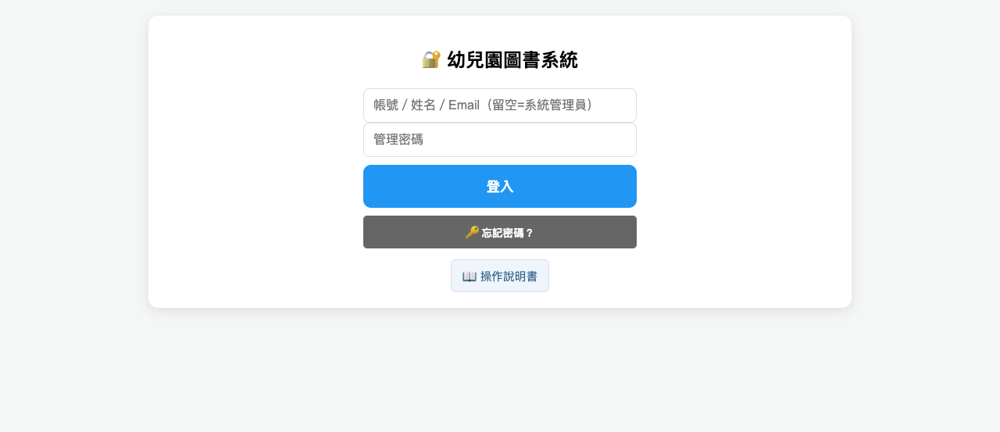
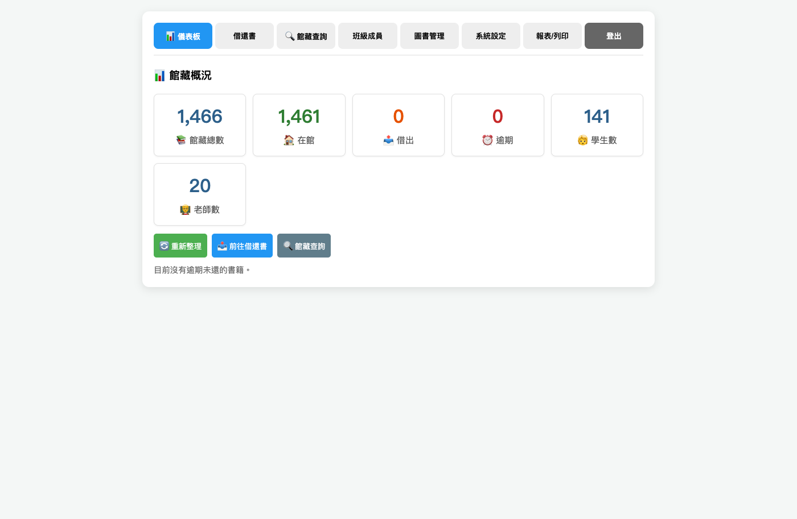
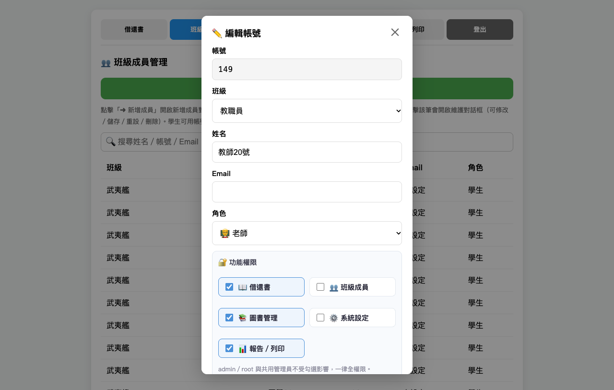
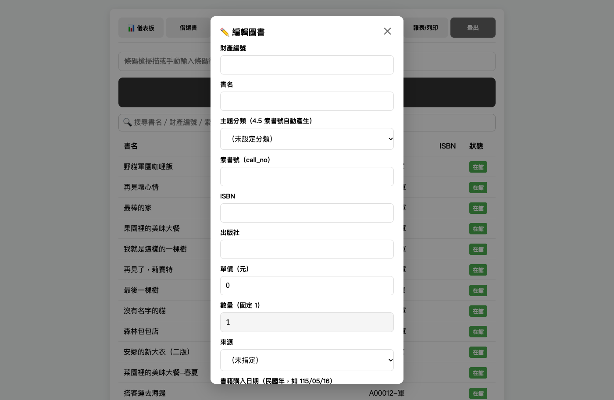
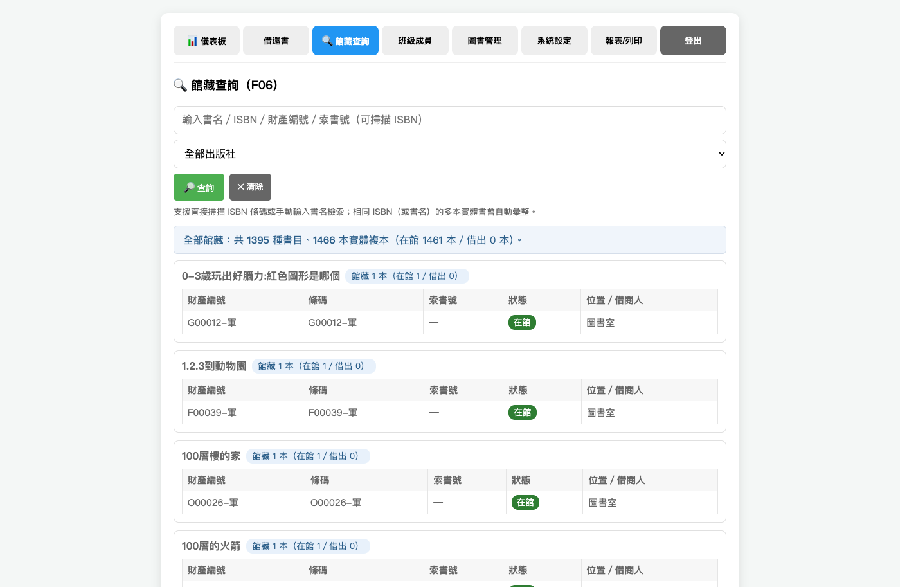
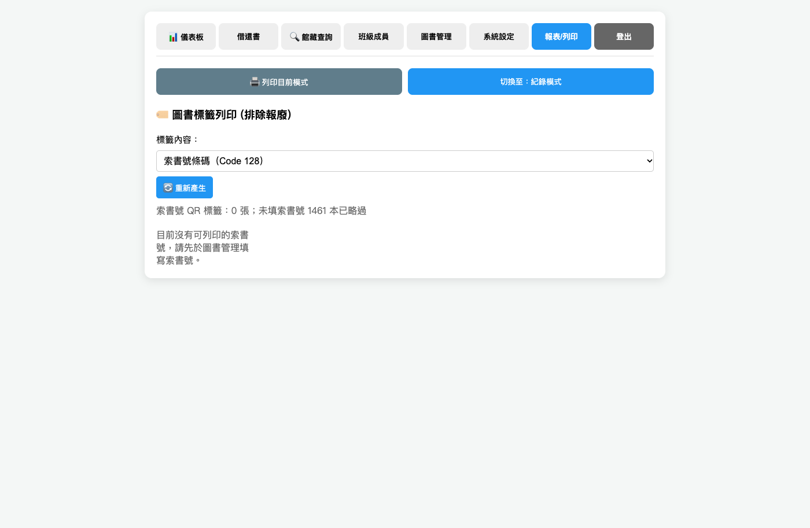
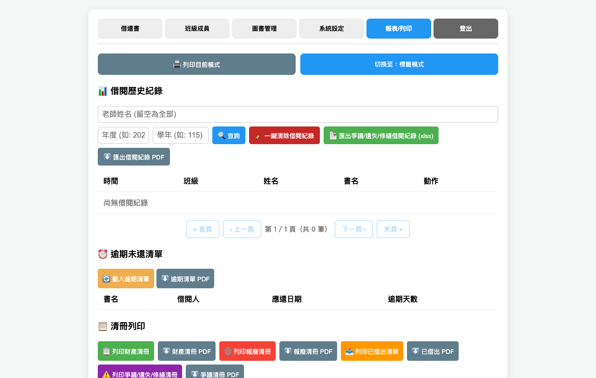

※ 本文畫面擷圖中的姓名、Email 為匿名化的示意資料，實際畫面會顯示真實班級與成員。
http://<伺服器IP>:8080/index.html，本機則是
http://localhost:8080/index.html）1234）登入；如有個人帳號，可填帳號、姓名或 Email⚠️ 預設密碼 1234
寫在功能規格文件上，任何人看過文件就能進入系統。
第一件事就是把它改掉。
系統開啟後，登入畫面選擇「帳號密碼登入」。

登入畫面的「帳號」欄位可填入下列任一項，再輸入密碼：
026）填帳號 + 密碼登入者，對應 users 表中的帳號（系統管理員 /
老師 / 學生），角色會決定預設的借閱類型（學生 / 老師）。
若姓名或 Email
同時對應多個帳號，系統會要求改用帳號登入，避免登入錯誤對象。
未填帳號、只輸入管理密碼者，登入為系統管理員（備援）。
登入後，儀表板為管理系統首頁（左上角會顯示系統名稱「海育非營利幼兒園圖書管理系統」）。

儀表板顯示基本圖書管理資訊：
| 項目 | 說明 |
|---|---|
| 📚 館藏總數 | 系統中所有書籍筆數 |
| 🏠 在館 | 目前可借閱的書籍（狀態為「在館」） |
| 📤 借出 | 目前外借中的書籍（狀態為「借出」） |
| ⏰ 逾期 | 已超過應還日期尚未歸還的書籍 |
| 🧒 學生數 | 啟用的學生成員人數（不含系統管理員） |
| 👨🏫 老師數 | 啟用的老師／教職員成員人數（不含系統管理員 Root 與日常管理員） |
若逾期數大於 0，建議到「報表/列印」頁面載入「逾期未還清單」進行追蹤。
登入後，畫面上的功能若屬於系統管理員功能（系統設定、報表列印），需要再次輸入管理密碼，才能使用。點擊「系統設定」或「報表/列印」頁籤時，會彈出密碼驗證視窗，輸入正確管理密碼後才能進入該頁面。
系統設有五項獨立功能權限，可逐帳號勾選：
| 權限 | 對應功能頁面 |
|---|---|
| 📖 借還書 (canLoan) | 借還書頁面 |
| 👥 班級成員 (canMember) | 班級成員管理 |
| 📚 圖書管理 (canBook) | 圖書管理 |
| ⚙️ 系統設定 (canConfig) | 系統設定 |
| 📊 報告／列印 (canReport) | 報表／列印 |
所有帳號（含各班學生）都可以勾選；勾選中的項目會亮藍色標示。
未勾選的功能：導覽列不會出現該頁籤，直接切換也會被擋下（後端同步檢查）。
admin／root 角色與共用管理員不受勾選影響，一律全權限。
建議：一般學生保持只勾「📖 借還書」即可；協助管理圖書的教職員再另外開「📚 圖書管理」「👥 班級成員」。

「系統設定 → 借閱規則」可調整：
| 身份 | 借閱數量上限 | 借閱期限 |
|---|---|---|
| 學生 | 每人每次最多 3 本 | 7 日 |
| 老師 | 每人每次最多 90 本 | 一學期（預設 180 天） |
修改後立即生效，借書時會依角色套用對應上限，並設定到期日。
在「系統設定 →
借閱規則」填寫「老師借閱至學期末」的起始日與結束日（例如
2026-09-01 ～
2027-01-31），老師借書時的應還日期會直接設為該學期結束日（23:59:59），取代固定天數；留空則沿用天數設定（預設
180 天）。系統管理者須能自由調整每學期開學日及還書到期日。
書籍在「借出」狀態時，可點「🔁 續借」延長到期日。續借後到期日會依成員身份（學生／老師）重新計算。
「報表/列印」頁面提供「逾期未還清單」，列出借出中且已過期的書籍。
可依「班級」與「師生」（全部／學生／老師）篩選，並可下載 PDF。
增加 F06
館藏查詢系統，供老師隨時調閱學生或老師本人的已歸還歷史紀錄。
當發生「這本書你上個月借了沒還」的爭議時，老師能快速打出「姓名 115
學年借還紀錄明細」的介面來釐清誤會。
為了避免借閱紀錄無限膨脹，管理者可以於每學期末或每學年末，盤點書籍狀態後，將「狀態」設定為「遺失、修繕中、爭議中」，「備註」欄位可自由填寫文字。借閱紀錄僅維持每學年有效，資料庫不會持續膨脹。
幼兒園每年暑假都會經歷大規模的學生異動（大班畢業、中／小班升級、新生入學）。系統提供 Excel／CSV 批次匯入學生名單的功能，避免開學初逐筆手動輸入。
系統上線前，廠商提供 Excel 範本供幼兒園填寫提供最新的老師名單（以員工編號條列）及最新的學生名單（以每班學生編號條列）。每學年重新編班、新生編學號。
以每學年為單位，可查詢學生借過哪些書。系統設定以學年為週期（例如
a01
即為閱讀紀錄僅每學年有效，在每學期末進行帳務結清，若有爭議或遺失狀態記錄到書籍狀態做為追蹤），借閱紀錄僅維持每學年有效，資料庫不會持續膨脹，較不佔儲存空間。
「系統設定 → 批次匯入」頁面提供下載範本：
下載後以 Excel 填寫，再透過「名單批次匯入」／「圖書批次匯入」匯入系統。
在「系統設定 → 🔢 學年編號重置」：
每學年重新編班後使用，將所有學生學號從各班 a01
起重新編排（格式：S＋班級代碼＋序號，如
SA01、SB01）。依班級排序，班內依姓名排序。重設後會影響條碼掃描識別，請確認後再執行。
在「系統設定 → ⏰ 自動備份設定」：
data/backups，可改為 NAS
或雲端磁碟掛載點路徑（即實現「雲端備份」）。系統會於設定時間自動執行備份，且僅保留最近 10 份備份，較舊者自動刪除。亦可點「💾 手動執行自動備份」立即備份一次。
http://localhost
或自訂本機網址運行）。file:/// 協定開啟網頁。系統須內建免網路連線之密碼重置功能，避免密碼遺失導致系統永久鎖死。
系統初次設定時，強制管理員設定安全提問（例如「開園日期？」、「園長姓名？」）。
忘記密碼時，只需在登入畫面點擊「忘記密碼」並答對設定的問題，即可直接在畫面上重設密碼。
系統不可僅有一組管理員帳號。必須建立「系統管理員（園長／行政）（日常用）」與「系統 Root（備用）」兩組最高權限帳號。配套措施：將「系統 Root」的帳號密碼寫在紙上，鎖在幼兒園的實體保險箱。當日常帳號忘記密碼被鎖死時，用備用帳號登入去幫日常帳號重設密碼。
書籍建檔的欄位順序，比照幼兒園現行財產清冊的順序。欄位由左至右順序，請依照財產編號、書名、出版社、單價、數量、總金額、書籍購入日期、保管人、確認、盤點日期、ISBN、來源、備註、預約狀態。
財產編號與書名是必要欄位，於系統登打完成就可以建檔完成進行儲存。
財產編號是每一本書的唯一號碼。
開啟「編輯圖書」對話框後，除了原本的財產編號、書名、索書號、ISBN，下方還有以下欄位可填寫：
| 欄位 | 說明 | 範例 |
|---|---|---|
| 出版社 | 書籍出版社 | 上誼、康軌 |
| 單價（元） | 購買單價，整數 | 280 |
| 數量 | 固定為 1（不可更改） | 1 |
| 總金額 | 單價 × 數量 | 280 |
| 來源 | 自購／軍購／捐贈／英補／署補 | 自購 |
| 書籍購入日期 | 民國年格式，如 115/05/16 | 115/05/16 |
| 保管人 | 實際保管該書的人員 | 總務處 |
| 確認 | 核對備註 | 已核 |
| 盤點日期 | 最近盤點日期，民國年格式 | 115/06/01 |
| 報廢日期 | 書籍報廢時填寫，民國年格式 | 116/12/31 |
| 預約狀態 | 有被預約／無被預約（系統即時顯示，唯讀） | 無被預約 |

當「書籍狀態」設定為「遺失、修繕中、爭議中」：設定為無法借出。
（非必要填寫欄位）
註記「瑕疵與缺件」或其他可能狀態。例如幼兒園的書（尤其是附
CD、字卡或翻翻書）極易發生「書還能看，但少了一頁／少了一張卡」的情況。
| 狀態名稱 | 說明 |
|---|---|
| 在館 | 書籍正常在架上，可供借閱。 |
| 借出 | 書籍已被借出，系統記錄借閱人與到期日。 |
| 遺失 | 幼兒把書弄丟。為「報廢」之前的緩衝狀態，可於備註欄記錄賠償進度。若家長已買回原書則註銷「遺失」狀態。 |
| 修繕中 | 破損但未達報廢標準，老師進行膠帶修補。此狀態讓書在查詢系統上暫時下架，避免學生預約或尋找，修補完成後恢復為「在館」。 |
| 爭議中 | 書籍此時既非在館，也無法證實遺失。為「爭議中／尋找中」的緩衝狀態，暫停計算逾期。 |
| 報廢 | 書籍已報廢，無法借出或歸還。 |
（系統先開發此功能，暫時不開啟使用）
當圖書狀態為「借出」時，提供下一位幼兒「預約排隊」的功能。只有「借出中」的書可以預約（在館的書直接借閱即可，系統會擋下）。同一成員同一本書同時只能有一筆「進行中」預約。
系統自動為每位學生（依照學號）生成一組專屬的條碼 (QR Code)，具備批次列印「全園學生條碼名冊」及「某一班幼兒條碼名冊」及「全園老師條碼名冊」的功能。
成員條碼格式：學生 SA+班級代碼+號碼（例如
SA01），老師 T+員工編號（例如
T001）。在「借還書」頁直接掃描成員條碼
QR，即可快速選定該位借閱人，無需手打姓名。
老師在「借書」與「還書」模式之間切換，通常也要移動滑鼠去點擊網頁按鈕。系統批次產出幾組特殊的系統指令條碼，例如：「啟動借書模式」、「啟動還書模式」及「清除重來」。
將這幾個指令條碼印出來，護貝貼在電腦螢幕邊框或桌面上。
操作流程：
還書第一步：掃碼「啟動還書模式」，系統會自動切換螢幕畫面進入「借還書頁面」且滑鼠游標指向還書模式的「掃描圖書條碼還書」欄位。
還書動作不需要在幼兒面前「即時」完成。在公共區域或各班設置一個實體的「還書箱」。學生早上來學校直接把書丟進還書箱。到了中午午休或放學後，再由單一行政人員或志工，推著還書箱到電腦前進行「連續批次還書」。
增加 F06 館藏查詢系統，目前只有系統管理員能看到報表，所以需要一個讓老師能簡單搜尋「某本書現在是在館還是借出」的查詢介面。
關鍵字搜尋與下拉選單：在館藏查詢的首頁，除了搜尋「書名」或「ISBN」之外，增加一個「出版社」的搜尋框或下拉選單。
一鍵統計總數：當老師在搜尋框輸入「上誼」或「康軒」並按下搜尋後，系統不只列出書單，還必須在畫面上方顯示彙整統計數據。
例如：「您搜尋的出版社為【上誼】，本園共有 45 種書目，總計 120 本實體複本（目前在館：105 本，借出：15 本）。」

系統所有清單與統計報表，除了畫面預覽外，皆須支援下列匯出格式：PDF、xlsx、csv。匯出之中文編碼必須確保於 Microsoft Excel 開啟時不會產生亂碼（採用 UTF-8 with BOM 編碼）。
條碼名冊：PDF（因為是條碼名冊，用 PDF 固定列印位置）。
清冊：xlsx 或 csv（匯出原生 Excel
工作表格式，以利後續人工加值運算與建檔）。
「書籍財產清冊」及「書籍報廢清冊」報表上方（或稱表頭）需有以下資訊：
在「報表/列印 → 標籤模式」可選擇貼紙格式，列印時會自動調整欄數：
| 格式 | 排列 | 張數/A4 | 適用 |
|---|---|---|---|
| AK308 | 3 × 8 | 24 張 | 預設格式，一般書籍標籤 |
| AK307 | 3 × 7 | 21 張 | 較大標籤 |
| AK306 | 3 × 6 | 18 張 | 較大標籤 |
| AF414 | 4 × 14 | 56 張 | 小型標籤，數量多時節省紙張 |
| AF410 | 4 × 10 | 40 張 | 小型標籤 |
其他列印項目是列印在 A4 的一般紙上，列印格式將預設為一張 A4 紙 3×8 張 QR Code 條碼。
若列印出來的 QR Code 標籤，因尺寸過小，導致掃描容易報錯，將建議調整一張 A4 紙可列印的數量。

※ 索書號標籤現在使用 QR Code（規格 v2.2 7.2 要求 QR），掃描更容易、容錯率更高。
| 報表名稱 | 條碼形式 | 說明 |
|---|---|---|
| 書籍財產清單條碼名冊 | QR Code | 財產編號、書名、出版社、單價、數量、總金額、書籍購入日期、保管人、確認、盤點日期 |
| 書籍索書號清單條碼名冊 | QR Code | 索書號清冊，以索書號排序 |
| 全園學生條碼名冊 | QR Code | 以班級為單位，一班一張 A4 |
| 全園老師條碼名冊（不含系統管理者） | QR Code | 排除 Root 與日常管理員 |
| 功能指令條碼名冊 | QR Code | 「啟動借書模式」、「啟動還書模式」、「清除重來」 |
| 書籍財產清冊（設定日期） | xlsx/csv | 欄位：財產編號、書名、出版社、單價、數量、總金額、書籍購入日期、保管人、確認、盤點日期 |
| 書籍報廢清冊（設定期間） | xlsx/csv | 欄位：財產編號、書名、出版社、單價、數量、總金額、書籍購入日期、保管人、確認、盤點日期、報廢日期 |
| 圖書已借出清冊（設定日期） | xlsx/csv | 可根據各班級或全園產出 |
| 逾期未還清冊（設定日期） | xlsx/csv | 可根據各班級或全園（勾選老師或學生或全部），匯出目前逾期未還書籍的清單 |
| 逾期已還紀錄清冊（設定期間） | xlsx/csv | 可根據各班級或全園（勾選老師或學生或全部），以借閱人為標題逐一列出逾期紀錄清單 |
| 個人閱讀歷程統計清冊（設定期間） | xlsx/csv | 可產出學生（依照特定學號）或老師（依照員工編號）最多 1 學年，總共借閱了多少本書的完整報表 |
| 全園閱讀歷程統計清冊（設定期間） | xlsx/csv | 借閱人（可選擇老師或學生）／借閱總次數 |
| 書籍爭議、遺失、修繕中狀態記錄清冊 | xlsx/csv | 列出狀態為遺失、修繕中、爭議中的書籍 |

Q： 點了「借書」按鈕卻跳出一個錯誤視窗？
A： 多半是瀏覽器沒有允許使用相機。請確認網址是
http://localhost:8080 開頭，或是以 https://
開頭。直接雙擊 HTML 檔開啟會被瀏覽器阻擋。
Q： 條碼槍沒反應？
A：
1. 確認游標在條碼輸入框上（點一下輸入框）。
2. 確認條碼槍插好，且檔案結尾是「換行」或「Enter」。
3. 先手動輸入數字按 Enter 測試看看。
Q： 同一本書重複掃了好幾次，會不會重複記錄？
A： 不會。系統內建去重，同一個條碼不會重複處理。
Q： 借了書之後，其他老師的畫面看得到嗎？
A：
如果連到同一台伺服器，看得到。請確認大家的網址是同一台電腦（例如
http://192.168.1.10:8080），重新整理後就會看到最新狀態。若各自啟動不同的伺服器，則各有一份獨立資料，不會同步。
Q： 畫面一直顯示「準備掃描…」？
A：
表示相機沒有啟動。請確認瀏覽器允許相機權限。若網址是
http://192.168.x.x（不是
localhost），瀏覽器會封鎖相機，請改用條碼槍，或請管理員以 HTTPS
啟動。
Q： 忘記密碼怎麼辦？
A： 點登入畫面的「🔑 忘記密碼？」：
1. 已設定 Email 的帳號：選「Email 驗證碼」，輸入帳號後收信，再輸入 6
位數驗證碼與新密碼即可。
2. 共用管理員（帳號留空）若未設定 Email
或寄信失敗：選「本機復原碼」，在伺服器主機開啟
data/recovery_code.txt，輸入裡面的復原碼。
若以上方式都無法使用，請聯絡圖書管理員；管理員可在「班級成員管理」重設個別帳號密碼。極限情況下刪除
data/library.db
可重設系統，但館藏資料也會一併消失，所以請務必先備份。
| 規格章節 | 功能項目 | 系統狀態 |
|---|---|---|
| 0.1 | 登入畫面樣式 | ✅ 已實作 |
| 0.2 | 儀表板（六個概況卡片） | ✅ 已實作 |
| 0.2 | 管理員功能二次密碼 | ✅ 已實作 |
| 1.1 | 五項 can_* 權限分級 | ✅ 已實作 |
| 1.2 | 借閱期限／數量上限（學生 3 本／7 天，老師 90 本／一學期） | ✅ 已實作 |
| 1.2 | 續借功能 | ✅ 已實作 |
| 1.2 | 學期起訖可自由調整 | ✅ 已實作 |
| 1.3 | 逾期未還清單 | ✅ 已實作 |
| 1.4 | 已歸還歷史紀錄（F06 查詢） | ✅ 已實作 |
| 1.5 | 一鍵清楚借閱紀錄 | ✅ 已實作 |
| 2.1 | Excel／CSV 批次匯入學生／教師名單 | ✅ 已實作 |
| 2.1 | Excel 範本下載 | ✅ 已實作 |
| 2.1 | 學年編號重置機制 | ✅ 已實作 |
| 3.1 | SQLite 資料庫＋每日自動備份保留 10 天 | ✅ 已實作 |
| 3.1 | 自動備份時間可設定 | ✅ 已實作 |
| 3.2 | 自帶微型伺服器，禁止 file:/// | ✅ 已實作 |
| 3.3 | 離線安全提問 | ✅ 已實作 |
| 3.3 | 雙軌制管理帳號 (admin/root) | ✅ 已實作 |
| 4.1 | 書目詳細資訊欄位（含總金額、預約狀態） | ✅ 已實作 |
| 4.2 | 備註欄位 | ✅ 已實作 |
| 4.3 | 六種書籍狀態 | ✅ 已實作 |
| 4.4 | 預約排隊機制 | ✅ 已實作 |
| 4.5 | 索書號自動產生（分類代碼＋注音） | ✅ 已實作 |
| 5.1 | SA01／T001 條碼體系 | ✅ 已實作 |
| 5.2 | 功能指令條碼（啟動借書／還書模式、清除重來） | ✅ 已實作 |
| 5.3 | 還書箱批次還書 | ✅ 已實作 |
| 6.1 | 館藏查詢（ISBN／書名／條碼＋複本彙整） | ✅ 已實作 |
| 6.2 | 出版社篩選＋統計 | ✅ 已實作 |
| 7.1 | PDF／xlsx／csv 匯出格式 | ✅ 已實作 |
| 7.2 | 報表表頭園所全稱＋列印日期 | ✅ 已實作 |
| 7.2 | 五款自黏貼紙格式 (AF410/414/AK306/307/308) | ✅ 已實作 |
| 7.2 | QR Code 標籤（取代 Code 128） | ✅ 已實作 |
| 7.2 | 書籍財產條碼名冊 (QR) | ✅ 已實作 |
| 7.2 | 全園學生條碼名冊 (QR) | ✅ 已實作 |
| 7.2 | 全園老師條碼名冊 (QR, 不含管理者) | ✅ 已實作 |
| 7.2 | 功能指令條碼名冊 (QR) | ✅ 已實作 |
| 7.2 | 個人閱讀歷程統計清冊 | ✅ 已實作 |
| 7.2 | 全園閱讀歷程統計清冊 | ✅ 已實作 |
| 7.2 | 書籍爭議／遺失／修繕中狀態記錄清冊 | ✅ 已實作 |
| 7.2 | 逾期已還紀錄清冊 | ✅ 已實作 |